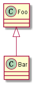
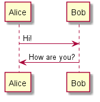

This is a Title¶
That has a paragraph about a main subject and is set when the '=' is at least the same length of the title itself.
Subject Subtitle¶
Subtitles are set with '-' and are required to have the same length of the subtitle itself, just like titles.
Lists can be unnumbered like:
Item Foo
Item Bar
Or automatically numbered:
Item 1
Item 2
Inline Markup¶
Words can have emphasis in italics or be bold and you can define
code samples with back quotes, like when you talk about a command: sudo
gives you super user powers!


